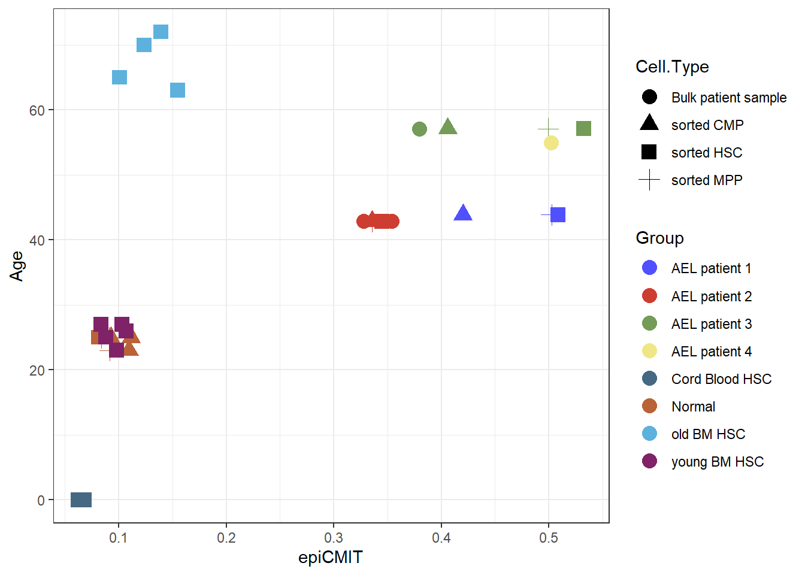
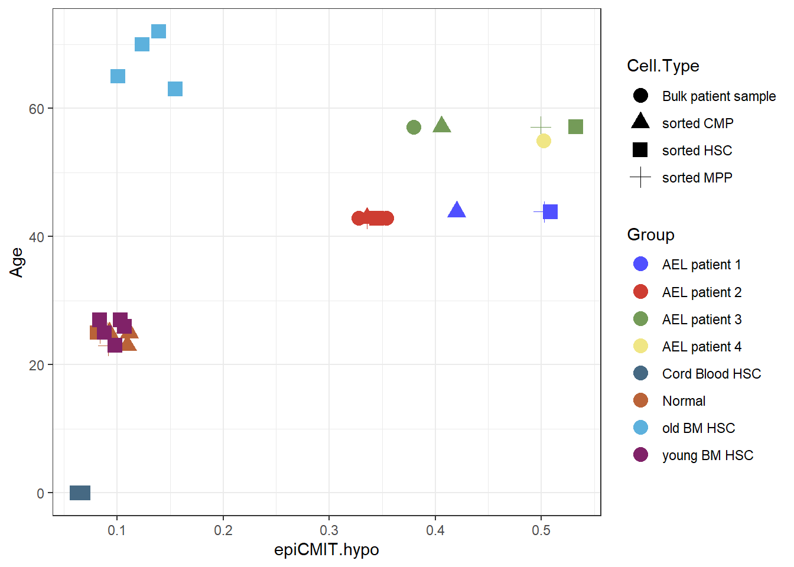
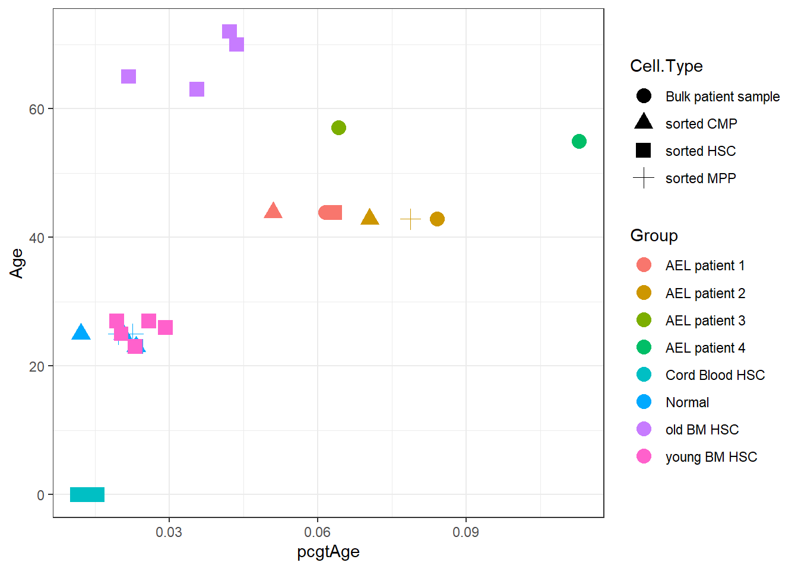
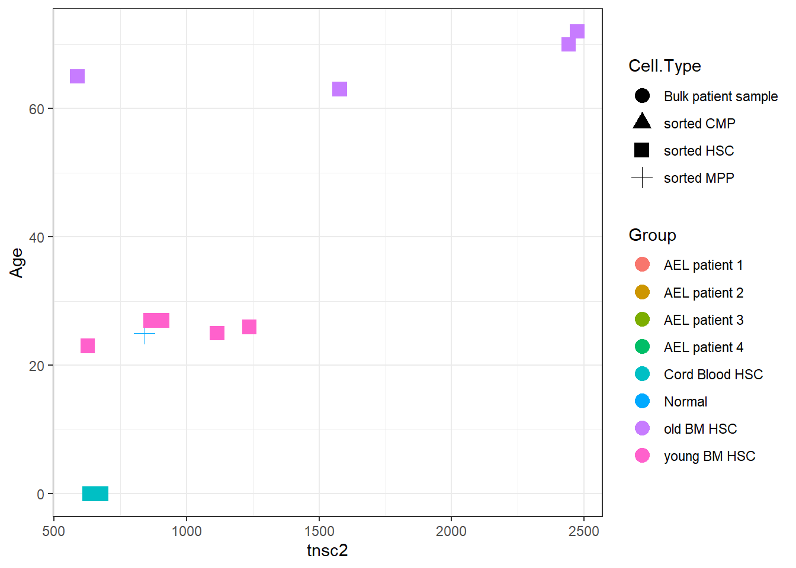

Epigenetic scores
Reka_Toth
06 February, 2023
Last updated: 2023-02-06
Checks: 7 0
Knit directory: 22_AEL/
This reproducible R Markdown analysis was created with workflowr (version 1.7.0). The Checks tab describes the reproducibility checks that were applied when the results were created. The Past versions tab lists the development history.
Great! Since the R Markdown file has been committed to the Git repository, you know the exact version of the code that produced these results.
Great job! The global environment was empty. Objects defined in the global environment can affect the analysis in your R Markdown file in unknown ways. For reproduciblity it’s best to always run the code in an empty environment.
The command set.seed(20230201) was run prior to running
the code in the R Markdown file. Setting a seed ensures that any results
that rely on randomness, e.g. subsampling or permutations, are
reproducible.
Great job! Recording the operating system, R version, and package versions is critical for reproducibility.
Nice! There were no cached chunks for this analysis, so you can be confident that you successfully produced the results during this run.
Great job! Using relative paths to the files within your workflowr project makes it easier to run your code on other machines.
Great! You are using Git for version control. Tracking code development and connecting the code version to the results is critical for reproducibility.
The results in this page were generated with repository version e3782e1. See the Past versions tab to see a history of the changes made to the R Markdown and HTML files.
Note that you need to be careful to ensure that all relevant files for
the analysis have been committed to Git prior to generating the results
(you can use wflow_publish or
wflow_git_commit). workflowr only checks the R Markdown
file, but you know if there are other scripts or data files that it
depends on. Below is the status of the Git repository when the results
were generated:
Ignored files:
Ignored: .Rhistory
Ignored: .Rproj.user/
Ignored: refdir/
Untracked files:
Untracked: analysis/01_read_in.Rmd
Untracked: analysis/3_combine_meth_ge_mofa.Rmd
Untracked: analysis/candidate_genes.Rmd
Untracked: analysis/enhancer_gene_pairs.Rmd
Untracked: analysis/epiCMIT_score.Rmd
Untracked: analysis/homer_all.Rmd
Untracked: analysis/homer_results_promoter.Rmd
Untracked: analysis/inital_analysis.Rmd
Untracked: analysis/prepare_homer.Rmd
Untracked: analysis/test.Rmd
Untracked: code/dataETOC2.Rd
Untracked: code/epiTOC2.R
Untracked: code/homer_analysis_2023_01.bash
Untracked: code/prepare_ge_mat.R
Untracked: code/region_annotation_function.R
Untracked: code/seq2gene_func.R
Untracked: data/CMP_vs._all_in_normal_down.txt
Untracked: data/CMP_vs._all_in_normal_up.txt
Untracked: data/CMP_vs._all_in_tumor_down.txt
Untracked: data/CMP_vs._all_in_tumor_up.txt
Untracked: data/DML_tests.RDS
Untracked: data/HSC_vs._all_in_normal_down.txt
Untracked: data/HSC_vs._all_in_normal_up.txt
Untracked: data/HSC_vs._all_in_tumor_down.txt
Untracked: data/HSC_vs._all_in_tumor_up.txt
Untracked: data/MPP_vs._all_in_normal_down.txt
Untracked: data/MPP_vs._all_in_normal_up.txt
Untracked: data/MPP_vs._all_in_tumor_down.txt
Untracked: data/MPP_vs._all_in_tumor_up.txt
Untracked: data/deseq.RDS
Untracked: data/dmls_single.RDS
Untracked: data/dmr_beds/
Untracked: data/dmr_beds_enhancer/
Untracked: data/dmr_beds_promoter/
Untracked: data/dmrs_single.RDS
Untracked: data/gene_count_matrix.csv
Untracked: data/gene_expression_mat.txt
Untracked: data/homer_results_merged.RDS
Untracked: data/mutations.txt
Untracked: data/no_snps_methrix_2023.RDS
Untracked: data/pcbc-stemsig.p219.Rda
Untracked: data/raw_methrix_2023.RDS
Untracked: data/samples_stringtie.txt
Untracked: data/transcript_count_matrix.csv
Untracked: data/tumor_vs._all_in_normal_down.txt
Untracked: data/tumor_vs._all_in_normal_up.txt
Untracked: data/tumor_vs._normal_in_CMP_cells_down.txt
Untracked: data/tumor_vs._normal_in_CMP_cells_up.txt
Untracked: data/tumor_vs._normal_in_HSC_cells_down.txt
Untracked: data/tumor_vs._normal_in_HSC_cells_up.txt
Untracked: data/tumor_vs._normal_in_MPP_cells_down.txt
Untracked: data/tumor_vs._normal_in_MPP_cells_up.txt
Untracked: dataCMP_vs._all_in_normal_down.txt
Untracked: dataCMP_vs._all_in_normal_up.txt
Untracked: dataCMP_vs._all_in_tumor_down.txt
Untracked: dataCMP_vs._all_in_tumor_up.txt
Untracked: dataHSC_vs._all_in_normal_down.txt
Untracked: dataHSC_vs._all_in_normal_up.txt
Untracked: dataHSC_vs._all_in_tumor_down.txt
Untracked: dataHSC_vs._all_in_tumor_up.txt
Untracked: dataMPP_vs._all_in_normal_down.txt
Untracked: dataMPP_vs._all_in_normal_up.txt
Untracked: dataMPP_vs._all_in_tumor_down.txt
Untracked: dataMPP_vs._all_in_tumor_up.txt
Untracked: datatumor_vs._normal_in_CMP_cells_down.txt
Untracked: datatumor_vs._normal_in_CMP_cells_up.txt
Untracked: datatumor_vs._normal_in_HSC_cells_down.txt
Untracked: datatumor_vs._normal_in_HSC_cells_up.txt
Untracked: datatumor_vs._normal_in_MPP_cells_down.txt
Untracked: datatumor_vs._normal_in_MPP_cells_up.txt
Untracked: output/MDS.html
Untracked: output/MDS_files/
Untracked: output/MDS_full.html
Untracked: output/MDS_full_files/
Untracked: output/TFBS.pdf
Untracked: output/filtered/
Untracked: output/filtered_MC_per_chr.tsv
Untracked: output/filtered_contig_lens.tsv
Untracked: output/filtered_global_MC_per_samp.tsv
Untracked: output/filtered_methrix_reports.html
Untracked: output/filtered_n_covered_by_all_samples.tsv
Untracked: output/filtered_n_covered_per_chr.tsv
Untracked: output/raw/
Untracked: output/raw_MC_per_chr.tsv
Untracked: output/raw_contig_lens.tsv
Untracked: output/raw_global_MC_per_samp.tsv
Untracked: output/raw_methrix_reports.html
Untracked: output/raw_n_covered_by_all_samples.tsv
Untracked: output/raw_n_covered_per_chr.tsv
Untracked: output/res_enhancer/
Unstaged changes:
Modified: analysis/1_read_in_RNA_seq.Rmd
Modified: analysis/DMR_calling.Rmd
Note that any generated files, e.g. HTML, png, CSS, etc., are not included in this status report because it is ok for generated content to have uncommitted changes.
These are the previous versions of the repository in which changes were
made to the R Markdown (analysis/epiCMIT_score_comb.Rmd)
and HTML (docs/epiCMIT_score_comb.html) files. If you’ve
configured a remote Git repository (see ?wflow_git_remote),
click on the hyperlinks in the table below to view the files as they
were in that past version.
| File | Version | Author | Date | Message |
|---|---|---|---|---|
| Rmd | e3782e1 | tkik | 2023-02-06 | wflow_publish(file = "analysis/epiCMIT_score_comb.Rmd") |
| html | ed6c457 | tkik | 2023-02-03 | Build site. |
| Rmd | d2e0b8f | tkik | 2023-02-03 | wflow_publish(files = c("analysis/epiCMIT_score_comb.Rmd", "analysis/DMR_report.Rmd", |
| Rmd | f155798 | tkik | 2023-02-01 | initial analysis |
library(methrix)
library(RnBeads)
library(RnBeads.hg19)
library(ggsci)replace.NA <-function(data,type.info,by = "mean"){
if(!"group" %in% colnames(type.info)) stop("type.info must have group column")
if(!"sample" %in% colnames(type.info)) stop("type.info must have a sample column")
# Do we have NAs?
if(is.na(table(is.na(data))["TRUE"])){
message("No NAs were found")
return(data)
}
# get NAs index
idx <- which(is.na(data) == TRUE,arr.ind=TRUE)
count <- table(rownames(idx))
message("======= Status Number of NA in probes ========")
message("--------------------- Summary------------------")
print(summary(as.numeric(count)))
message("\n----------- Probes with more nb of NAs -----------")
print(head(sort(count,decreasing = T)))
message("===============================================")
idx <- cbind(idx, mean = NA, median = NA)
# For each NA value calculate the mean for the same probe for the samples
# where it belongs
for(line in 1:nrow(idx)){
row <- idx[line,1]
col <- idx[line,2]
probe <- rownames(idx)[line]
sample <- colnames(data)[col]
group <- type.info[type.info$sample == sample,"group"]
samples.in.group <- type.info[type.info$group == group,]$sample
# get the probe value for all samples in the same group
aux <- data[rownames(data) %in% probe, colnames(data) %in% samples.in.group]
idx[line,3] <- mean(as.numeric(aux),na.rm = TRUE)
idx[line,4] <- median(as.numeric(aux),na.rm = TRUE)
}
# Step 2 replace
for(line in 1:nrow(idx)){
row <- idx[line,1]
col <- idx[line,2]
if(by == "mean"){
data[idx[line,1],idx[line,2]] <- idx[line,3]
} else if(by == "median") {
data[idx[line,1],idx[line,2]] <- idx[line,4]
}
}
return(data)
}###########libraries and functions#############
DATA2 = ("P:/1_Aging_HSC//data/")
RESULT = "./output/"
CODE = "./code/"source(file.path(CODE, "epiTOC2.R"))
meth <- readRDS(file.path("data", "no_snps_methrix_2023.RDS"))
meth2 <- readRDS(file.path(DATA2, "no_snps_methrix.RDS"))
meth@colData <- meth@colData[,-grep("X", colnames(meth@colData))]
meth@colData$Cell.Type <- gsub(" \\(.*\\)", "", meth@colData$Cell.Type)
meth@colData$Group <- as.character(meth@colData$Group)
meth@colData$Group[meth@colData$Group==""] <- "Normal"
meth@colData$Age[meth@colData$Patient.ID=="C010_HSC_8561"] <- "55"
download.file("https://github.com/Duran-FerrerM/Pan-B-cell-methylome/raw/master/data/Estimate.epiCMIT.RData", destfile = "Estimate.epiCMIT.RData", method="libcurl")
load("Estimate.epiCMIT.RData")
file.remove("Estimate.epiCMIT.RData")[1] TRUEepiCMIT score
Publication: epiCMIT (https://doi.org/10.1038/s43018-020-00131-2)
sites <- rnb.get.annotation(type="probes450")
sites <- unlist(sites, use.names = F)
epiCMIT_sites <- sites[rownames(Illumina.450k.hg19.example),]
betas_epiCMIT <- get_region_summary(meth, regions = epiCMIT_sites)
betas_epiCMIT2 <- get_region_summary(meth2, regions = epiCMIT_sites)
betas_epiCMIT <- merge(betas_epiCMIT, betas_epiCMIT2, by=c("chr", "start","end", "n_overlap_CpGs", "rid"), all=F)
rownames(betas_epiCMIT) <- names(epiCMIT_sites[betas_epiCMIT$rid,])
betas_epiCMIT <- as.data.frame(betas_epiCMIT)
rownames(betas_epiCMIT) <- names(epiCMIT_sites[betas_epiCMIT$rid,])
names(epiCMIT.v2.Annot$epiCMIT.450K.EPIC.hg19) <- epiCMIT.v2.Annot$epiCMIT.450K.EPIC.hg19$Name
epiCMIT.annot_2 <- as.data.frame(epiCMIT.v2.Annot$epiCMIT.450K.EPIC.hg19[rownames(betas_epiCMIT),])
calc <- as.matrix(betas_epiCMIT[,-(1:5)])
missing <- apply(calc, 2, function(x) sum(is.na(x)))>50
calc <- calc[,-missing]
res <- DNAm.to.epiCMIT(DNAm = as.data.frame(calc), DNAm.genome.assembly = "hg19", map.DNAm.to = "Illumina.450K.epiCMIT", CpGs.as.DNAm.rownames = T)
epiCMIT.comb <- epiCMIT(res, export.results = F)
coldata <- as.data.frame(colData(meth))
coldata$Cell.Type[is.na(coldata$Cell.Type)] <- "Bulk patient sample"
coldata <- coldata[,c("Age", "Group", "Cell.Type")]
coldata2 <- as.data.frame(colData(meth2))
coldata2 <- coldata2[,c("Age", "Group")]
coldata2$Cell.Type <- "sorted HSC"
coldata <- rbind(coldata, coldata2)
coldata$Age <- as.numeric(coldata$Age)
coldata$Age[is.na(coldata$Age)] <- 99
coldata2 <- coldata[-missing,]
coldata2$Group <- as.character(coldata2$Group)
coldata2$Group[grep("NORMAL", rownames(coldata2))] <- "Normal"
coldata2 <- cbind(coldata2, epiCMIT.comb$epiCMIT.scores)
ggplot(coldata2)+geom_point(aes(epiCMIT, Age, color=Group, shape=Cell.Type), size=4)+theme_bw()+scale_color_igv()
ggplot(coldata2)+geom_point(aes(epiCMIT.hyper, Age, color=Group, shape=Cell.Type), size=4)+theme_bw()+scale_color_igv()ggplot(coldata2)+geom_point(aes(epiCMIT.hypo, Age, color=Group, shape=Cell.Type), size=4)+theme_bw()+scale_color_igv()
ggplot(coldata2)+geom_point(aes(epiCMIT.hyper, epiCMIT.hypo, color=Group, shape=Cell.Type), size=4)+theme_bw()+scale_color_igv()#epiTOC
Publication: (epiTOC2)[https://doi.org/10.1186/s13073-020-00752-3]
Results:
tnsc: the estimated cumulative number of stem-cell divisions per stem-cell per year and per sample using the full epiTOC2 model.
tnsc2: the estimated cumulative number of stem-cell divisions per stem-cell per year and per sample using an approximation of epiTOC2 which assumes all epiTOC2 CpGs have beta-values exactly 0 in the fetal stage.
irS: this is returned only if the ages are provided, and gives the estimated average lifetime intrinsic rate of stem-cell division per sample, as derived from epiTOC2
irS2: as irS, but for the approximation.
irT: the median estimate over all irS values, yielding a median estimate for the intrinsic rate of stem-cell division for the tissue.
irT2: as irT, but for the approximation.
pcgtAge: this is the mitotic-score obtained using our previous epiTOC model.
hypoSC: the HypoClock score over the 678 solo-WCGWs
load("code/dataETOC2.Rd")
ETOC_sites <- c(rownames(dataETOC2.l$epiTOC2), dataETOC2.l$epiTOC, dataETOC2.l$`cm-solo-WCGW`)
ETOC_sites <- unique(ETOC_sites)
ETOC_sites <- sites[ETOC_sites,]
betas_ETOC <- as.data.frame(get_region_summary(meth, regions = ETOC_sites))
betas_ETOC2 <- as.data.frame(get_region_summary(meth2, regions = ETOC_sites))
rownames(betas_ETOC) <- names(ETOC_sites[betas_ETOC$rid,])
rownames(betas_ETOC2) <- names(ETOC_sites[betas_ETOC2$rid,])
betas_ETOC <- merge(betas_ETOC, betas_ETOC2, by=c("chr", "start","end", "n_overlap_CpGs", "rid"), all=F)
rownames(betas_ETOC) <- names(ETOC_sites[betas_ETOC$rid,])
#betas_ETOC <- betas_ETOC[intersect(rownames(betas_ETOC), rownames(betas_ETOC2)),]
#betas_ETOC2 <- betas_ETOC2[intersect(rownames(betas_ETOC), rownames(betas_ETOC2)),]
#betas_ETOC <- cbind(betas_ETOC, betas_ETOC2[,-(1:5)])
calc <- as.matrix(betas_ETOC[,-(1:5)])
missing <- apply(calc, 2, function(x) sum(is.na(x)))>50
calc <- calc[,-which(missing)]
res2 <- epiTOC2(calc, ages.v = coldata$Age[-which(missing)])[1] "Number of represented epiTOC CpGs (max=385)=360"
[1] "Number of represented epiTOC2 CpGs (max=163)=149"
[1] "Number of represented solo-WCGWs (max=678)=610"coldata2 <- coldata[-which(missing),]
coldata2$hypoSC <- res2$hypoSC
coldata2$pcgtAge <- res2$pcgtAge
coldata2$tnsc <- res2$tnsc
coldata2$tnsc2 <- res2$tnsc2
coldata2$irS <- res2$irS
coldata2$irS2 <- res2$irS2
ggplot(coldata2)+geom_point(aes(hypoSC, Age, color=Group, shape=Cell.Type), size=4)+theme_bw()
ggplot(coldata2)+geom_point(aes(pcgtAge, Age, color=Group, shape=Cell.Type), size=4)+theme_bw()
ggplot(coldata2)+geom_point(aes(tnsc, Age, color=Group, shape=Cell.Type), size=4)+theme_bw()ggplot(coldata2)+geom_point(aes(tnsc2, Age, color=Group, shape=Cell.Type), size=4)+theme_bw()
ggplot(coldata2)+geom_point(aes(irS, Age, color=Group, shape=Cell.Type), size=4)+theme_bw()ggplot(coldata2)+geom_point(aes(irS2, Age, color=Group, shape=Cell.Type), size=4)+theme_bw()Stemness score
load("data/pcbc-stemsig.p219.Rda")
stem_sites <- sites[names(mm$w),]
betas_stem <- as.data.frame(get_region_summary(meth, regions = stem_sites))
betas_stem2 <- as.data.frame(get_region_summary(meth2, regions = stem_sites))
betas_stem <- merge(betas_stem, betas_stem2, by=c("chr", "start","end", "n_overlap_CpGs", "rid"), all=T)
rownames(betas_stem) <- names(stem_sites[betas_stem$rid,])
missing <- names(mm$w)[!(names(mm$w) %in% rownames(betas_stem))]
beta2 <- data.frame(matrix(nrow = length(missing), ncol = ncol(betas_stem)))
rownames(beta2) <- missing
colnames(beta2) <- colnames(betas_stem)
betas_stem <- rbind(betas_stem, beta2)
betas_stem <- betas_stem[names(mm$w),]type.info <- coldata
type.info$group <- type.info$Group
type.info$sample <- type.info$Cell.Type
testset <- replace.NA(betas_stem[,-(1:5)], type.info, by="median") Min. 1st Qu. Median Mean 3rd Qu. Max.
1.000 1.000 2.000 4.654 3.000 35.000
cg00812799 cg01378062 cg02463253 cg04844207 cg07397612 cg09373875
35 35 35 35 35 35 testset <- apply(testset, 2, function(x) ifelse(is.na(x), mean(x, na.rm=T), x))
w <- mm$w
X <- testset[as.character(names(w)),]
X <- as.matrix(X)
ss <- t(w) %*% X
ss <- ss - min(ss)
ss <- ss / max(ss)
ss <- as.data.frame(t(ss))
colnames(ss) <- "mDNAsi"
annotation <- merge(type.info, ss, by.x="row.names", by.y="row.names", sort=F)
ggplot(annotation)+geom_point(aes(mDNAsi, Age, color=Group, shape=Cell.Type), size=4)+theme_bw()
sessionInfo()R version 4.2.2 (2022-10-31 ucrt)
Platform: x86_64-w64-mingw32/x64 (64-bit)
Running under: Windows 10 x64 (build 19042)
Matrix products: default
locale:
[1] LC_COLLATE=English_United States.utf8
[2] LC_CTYPE=English_United States.utf8
[3] LC_MONETARY=English_United States.utf8
[4] LC_NUMERIC=C
[5] LC_TIME=English_United States.utf8
attached base packages:
[1] parallel grid stats4 stats graphics grDevices utils
[8] datasets methods base
other attached packages:
[1] ggsci_2.9
[2] RnBeads.hg19_1.29.0
[3] RnBeads_2.15.1
[4] plyr_1.8.7
[5] methylumi_2.43.0
[6] minfi_1.43.1
[7] bumphunter_1.39.0
[8] locfit_1.5-9.6
[9] iterators_1.0.14
[10] foreach_1.5.2
[11] Biostrings_2.65.6
[12] XVector_0.37.1
[13] FDb.InfiniumMethylation.hg19_2.2.0
[14] org.Hs.eg.db_3.16.0
[15] TxDb.Hsapiens.UCSC.hg19.knownGene_3.2.2
[16] GenomicFeatures_1.49.7
[17] AnnotationDbi_1.59.1
[18] reshape2_1.4.4
[19] scales_1.2.1
[20] illuminaio_0.39.1
[21] limma_3.53.10
[22] gridExtra_2.3
[23] gplots_3.1.3
[24] ggplot2_3.3.6
[25] fields_14.1
[26] viridis_0.6.2
[27] viridisLite_0.4.1
[28] spam_2.9-1
[29] ff_4.0.7
[30] bit_4.0.4
[31] cluster_2.1.4
[32] MASS_7.3-58.1
[33] methrix_1.12.0
[34] SummarizedExperiment_1.27.3
[35] Biobase_2.57.1
[36] GenomicRanges_1.49.0
[37] GenomeInfoDb_1.33.7
[38] IRanges_2.31.2
[39] S4Vectors_0.35.4
[40] BiocGenerics_0.43.4
[41] MatrixGenerics_1.9.1
[42] matrixStats_0.62.0
[43] data.table_1.14.4
[44] workflowr_1.7.0
loaded via a namespace (and not attached):
[1] utf8_1.2.2 tidyselect_1.2.0
[3] RSQLite_2.2.18 BiocParallel_1.31.12
[5] munsell_0.5.0 codetools_0.2-18
[7] preprocessCore_1.59.0 withr_2.5.0
[9] colorspace_2.0-3 filelock_1.0.2
[11] highr_0.9 knitr_1.40
[13] rstudioapi_0.14 labeling_0.4.2
[15] git2r_0.30.1 GenomeInfoDbData_1.2.9
[17] farver_2.1.1 bit64_4.0.5
[19] rhdf5_2.41.1 rprojroot_2.0.3
[21] vctrs_0.5.0 generics_0.1.3
[23] xfun_0.34 BiocFileCache_2.6.0
[25] R6_2.5.1 bitops_1.0-7
[27] rhdf5filters_1.9.0 cachem_1.0.6
[29] reshape_0.8.9 DelayedArray_0.23.2
[31] assertthat_0.2.1 promises_1.2.0.1
[33] BiocIO_1.8.0 gtable_0.3.1
[35] processx_3.7.0 rlang_1.0.6
[37] genefilter_1.79.0 splines_4.2.2
[39] rtracklayer_1.57.0 GEOquery_2.66.0
[41] BiocManager_1.30.19 yaml_2.3.6
[43] httpuv_1.6.6 tools_4.2.2
[45] nor1mix_1.3-0 ellipsis_0.3.2
[47] jquerylib_0.1.4 RColorBrewer_1.1-3
[49] siggenes_1.72.0 Rcpp_1.0.9
[51] sparseMatrixStats_1.9.0 progress_1.2.2
[53] zlibbioc_1.43.0 purrr_0.3.4
[55] RCurl_1.98-1.9 ps_1.7.0
[57] prettyunits_1.1.1 openssl_2.0.4
[59] fs_1.5.2 magrittr_2.0.3
[61] whisker_0.4 hms_1.1.2
[63] evaluate_0.17 xtable_1.8-4
[65] XML_3.99-0.12 mclust_6.0.0
[67] compiler_4.2.2 biomaRt_2.54.0
[69] tibble_3.1.8 maps_3.4.1
[71] KernSmooth_2.23-20 crayon_1.5.2
[73] htmltools_0.5.3 tzdb_0.3.0
[75] later_1.3.0 tidyr_1.2.1
[77] DBI_1.1.3 dbplyr_2.2.1
[79] rappdirs_0.3.3 readr_2.1.3
[81] Matrix_1.5-1 cli_3.3.0
[83] quadprog_1.5-8 dotCall64_1.0-2
[85] pkgconfig_2.0.3 getPass_0.2-2
[87] GenomicAlignments_1.33.1 xml2_1.3.3
[89] annotate_1.76.0 bslib_0.4.1
[91] rngtools_1.5.2 multtest_2.53.0
[93] beanplot_1.3.1 doRNG_1.8.2
[95] scrime_1.3.5 stringr_1.4.1
[97] callr_3.7.3 digest_0.6.29
[99] rmarkdown_2.17 base64_2.0.1
[101] DelayedMatrixStats_1.20.0 restfulr_0.0.15
[103] curl_4.3.3 Rsamtools_2.13.4
[105] gtools_3.9.3 rjson_0.2.21
[107] lifecycle_1.0.3 nlme_3.1-160
[109] jsonlite_1.8.3 Rhdf5lib_1.19.2
[111] askpass_1.1 BSgenome_1.66.0
[113] fansi_1.0.3 pillar_1.8.1
[115] lattice_0.20-45 KEGGREST_1.38.0
[117] fastmap_1.1.0 httr_1.4.4
[119] survival_3.4-0 glue_1.6.2
[121] png_0.1-7 stringi_1.7.8
[123] sass_0.4.2 HDF5Array_1.25.2
[125] blob_1.2.3 caTools_1.18.2
[127] memoise_2.0.1 dplyr_1.0.10